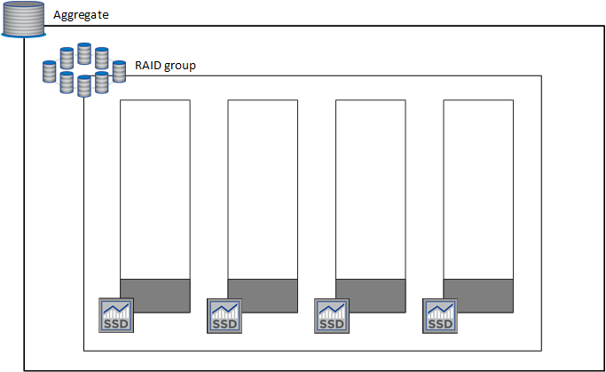

Amazon Web Services
Amazon Web Services
 Google Cloud
Google Cloud
 Microsoft Azure
Microsoft Azure
 Demander de modifier un document
Demander de modifier un document Modifier sur GitHub
Modifier sur GitHub Guide des contributeurs
Guide des contributeursVolumes flexibles dans AWS
Contributeurs
La prise en charge de la fonctionnalité Amazon EBS Elastic volumes intégrée dans un agrégat Cloud Volumes ONTAP améliore les performances et la capacité, et permet à BlueXP d’augmenter automatiquement la capacité du disque sous-jacent selon les besoins.
Avantages
-
Croissance dynamique des disques
BlueXP peut augmenter dynamiquement la taille des disques tandis que Cloud Volumes ONTAP est en cours d’exécution et que les disques sont toujours connectés.
-
Performances améliorées
Les agrégats activés avec Elastic volumes peuvent disposer de huit disques utilisés de la même manière sur deux groupes RAID. Cette configuration offre un débit plus élevé et des performances cohérentes.
-
Agrégats de taille supérieure
La prise en charge de huit disques fournit une capacité totale maximale de 128 Tio. Ces limites sont supérieures à la limite de six disques et de 96 Tio pour les agrégats qui ne sont pas activés avec la fonctionnalité Elastic volumes.
Notez que les limites de capacité totale du système restent les mêmes.
Configurations compatibles
La fonctionnalité Amazon EBS Elastic volumes est prise en charge avec des versions Cloud Volumes ONTAP spécifiques et des types de disques EBS spécifiques.
Version Cloud Volumes ONTAP
La fonction Elastic volumes est prise en charge avec les systèmes New Cloud Volumes ONTAP créés à partir de la version 9.11.0 ou ultérieure. Cette fonction est non prise en charge avec les systèmes Cloud Volumes ONTAP existants déployés avant 9.11.0.
Par exemple, la fonctionnalité Elastic volumes n’est pas prise en charge si vous avez créé un système Cloud Volumes ONTAP 9.9.0 puis mis à niveau ce système vers la version 9.11.0. Il doit s’agir d’un nouveau système déployé à l’aide de la version 9.11.0 ou ultérieure.
Types de disques EBS
La fonctionnalité Elastic volumes est automatiquement activée au niveau de l’agrégat lors de l’utilisation de disques SSD à usage général (gp3) ou de disques SSD d’IOPS provisionnés (io1). La fonctionnalité Elastic volumes n’est pas prise en charge avec les agrégats utilisant n’importe quel autre type de disque.
Autorisations AWS requises
Depuis la version 3.9.19, le connecteur nécessite les autorisations suivantes pour activer et gérer la fonctionnalité Elastic volumes sur un agrégat Cloud Volumes ONTAP :
-
ec2:Describvolumesmodificateurs
-
ec2 : Modifier le volume
Ces autorisations sont incluses dans "Règles fournies par NetApp"
Fonctionnement de la prise en charge d’Elastic volumes
Un agrégat sur lequel la fonctionnalité Elastic volumes est activée se compose d’un ou deux groupes RAID. Chaque groupe RAID dispose de quatre disques identiques de même capacité. Voici un exemple d’agrégat de 10 Tio qui contient quatre disques sur 2.5 Tio chacun :

Lorsque BlueXP crée un agrégat, il commence par un groupe RAID. Si de la capacité supplémentaire est nécessaire, BlueXP augmente l’agrégat en augmentant de la même quantité la capacité de tous les disques du groupe RAID. L’augmentation de la capacité est soit un minimum de 256 Gio, soit 10 % de la taille de l’agrégat.
Par exemple, si vous avez un agrégat de 1 To, chaque disque est de 250 Gio. 10 % de la capacité de l’agrégat est de 100 Gio. Soit inférieure à 256 Gio, donc la taille de l’agrégat est augmentée de 256 Gio au minimum (ou 64 Gio pour chaque disque).
BlueXP augmente la taille des disques tandis que le système Cloud Volumes ONTAP est en cours d’exécution et que les disques sont toujours connectés. Le changement ne perturbe pas les opérations.
Si un agrégat atteint 64 Tio (ou 16 Tio sur chaque disque), BlueXP crée un second groupe RAID pour la capacité supplémentaire. Ce deuxième groupe RAID fonctionne comme le premier : il possède quatre disques ayant la même capacité et peut atteindre 64 Tio. Cela signifie qu’un agrégat peut avoir une capacité maximale de 128 Tio.
Voici un exemple d’agrégat avec deux groupes RAID. La limite de capacité a été atteinte sur le premier groupe RAID, tandis que les disques du second groupe RAID disposent d’une quantité importante d’espace disponible.
Que se passe-t-il lorsque vous créez un volume
Si vous créez un volume qui utilise des disques gp3 ou io1, BlueXP crée le volume sur un agrégat de la manière suivante :
-
Si un agrégat gp3 ou io1 est déjà activé avec Elastic volumes, BlueXP crée le volume sur cet agrégat.
-
Si plusieurs agrégats gp3 ou io1 sont activés, BlueXP crée le volume sur l’agrégat qui requiert la plus faible quantité de ressources.
-
Si le système ne dispose que d’agrégats gp3 ou io1 pas activés pour les volumes Elastic, le volume est créé sur cet agrégat.

Bien que ce scénario soit peu probable, il est possible dans deux cas :
-
La fonctionnalité Elastic volumes est explicitement désactivée lors de la création d’un agrégat à partir de l’API.
-
Vous avez créé un nouveau système Cloud Volumes ONTAP depuis l’interface utilisateur. Dans ce cas, la fonctionnalité Elastic volumes est désactivée sur l’agrégat initial. Révision Limites ci-dessous pour en savoir plus.
-
-
Si aucun agrégat n’a la capacité suffisante, BlueXP crée l’agrégat avec les volumes Elastic activés, puis crée le volume sur cet nouvel agrégat.
La taille de l’agrégat dépend de la taille du volume demandée et d’une capacité supplémentaire de 10 %.
Mode de gestion de la capacité
Le mode de gestion de la capacité pour un connecteur fonctionne avec les volumes Elastic comme il fonctionne avec d’autres types d’agrégats :
-
Lorsque le mode automatique est activé (il s’agit du paramètre par défaut), BlueXP augmente automatiquement la taille des agrégats si vous avez besoin de capacité supplémentaire.
-
Si vous changez le mode de gestion de la capacité en mode Manuel, BlueXP vous demande d’obtenir votre autorisation pour acquérir de la capacité supplémentaire.
Limites
L’augmentation de la taille d’un agrégat peut prendre jusqu’à 6 heures. Pendant ce temps, BlueXP ne peut pas demander de capacité supplémentaire pour cet agrégat.
Fonctionnement avec Elastic volumes
Vous pouvez utiliser Elastic volumes dans BlueXP comme suit :
-
Créez un nouveau système sur lequel les volumes élastiques sont activés sur l’agrégat initial lors de l’utilisation de disques gp3 ou io1
-
Créez un nouveau volume sur un agrégat sur lequel Elastic volumes est activé
Si vous créez un volume qui utilise des disques gp3 ou io1, BlueXP crée automatiquement le volume sur un agrégat sur lequel Elastic volumes est activé. Pour plus de détails, reportez-vous à Que se passe-t-il lorsque vous créez un volume.
-
Créez un nouvel agrégat pour lequel Elastic volumes est activé
Les volumes élastiques sont automatiquement activés sur les nouveaux agrégats qui utilisent des disques gp3 ou io1, tant que le système Cloud Volumes ONTAP a été créé à partir de la version 9.11.0 ou ultérieure.
Lorsque vous créez l’agrégat, BlueXP vous invite à indiquer la taille de la capacité de l’agrégat. Cette configuration est différente des autres configurations dans lesquelles vous choisissez une taille de disque et un nombre de disques.
La capture d’écran suivante montre un exemple d’un nouvel agrégat composé de disques gp3.

-
Identifiez les agrégats pour lesquels Elastic volumes est activé
Lorsque vous accédez à la page allocation avancée, vous pouvez déterminer si la fonctionnalité Elastic volumes est activée ou non sur un agrégat. Dans l’exemple suivant, aggr2 possède les volumes Elastic activés, contrairement à aggr1.
-
Accroître la capacité d’un agrégat
BlueXP ajoute automatiquement de la capacité aux agrégats selon les besoins, mais vous pouvez également augmenter vous-même la capacité.
-
Répliquez les données dans un agrégat sur lequel Elastic volumes est activé
Si le système Cloud Volumes ONTAP de destination prend en charge les volumes Elastic, un volume de destination sera placé sur un agrégat sur lequel les volumes élastiques sont activés (tant que vous choisissez un disque gp3 ou io1).